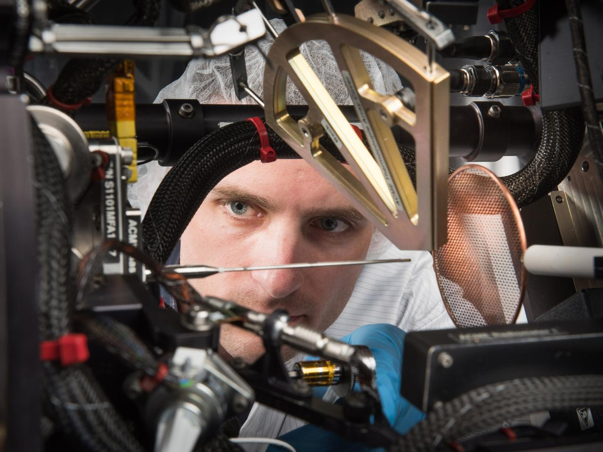
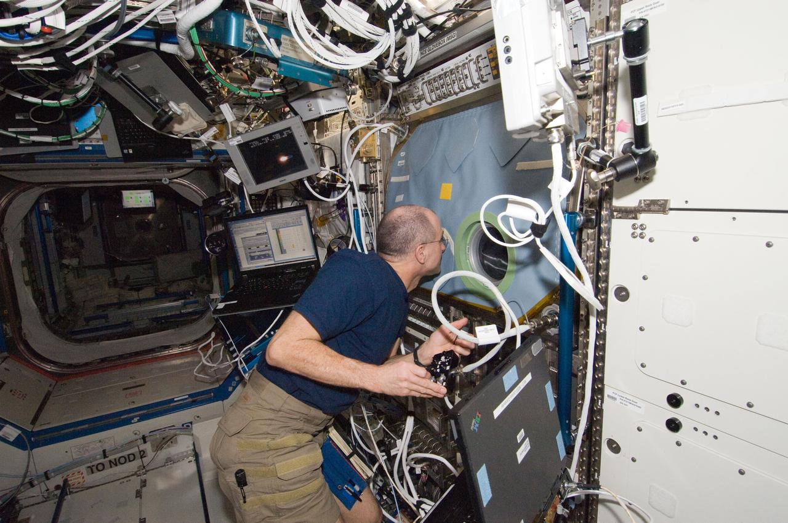
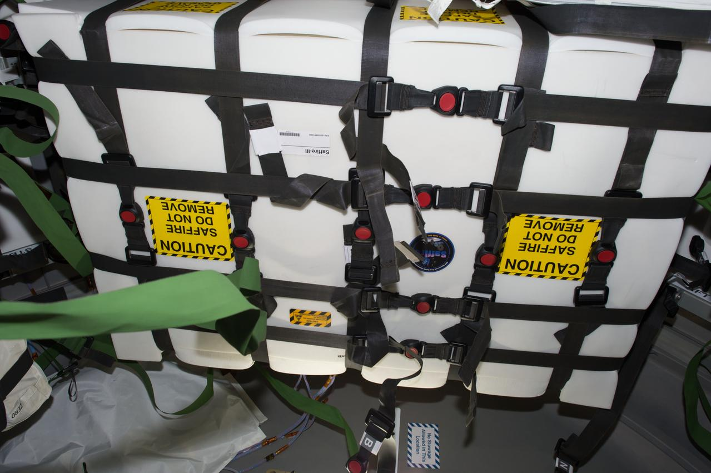

NASA Space Apps 2026 · PSI microgravity combustion
Ethay ameflay inyay eefallfray
Ethay uickqay ownbray oxfay umpsjay overyay ethay azylay ogday.
- Ightflay ataday
- Oundgray udiesstay
- Irclecay, iangletray, uaresqay: evention-pray, etection-day, uppression-say
From the station




Photos are from the NASA Image and Video Library. They show hardware and sessions, not results. See every investigation.
Our edge
- Irstfay ointpay
- Orem-lay ipsumyay olorday itsay ametyay, onsectetuercay adipiscingyay elityay.
- Econdsay ointpay
- Ethay uickqay ownbray oxfay umpsjay overyay ethay azylay ogday.
- Irdthay ointpay
- Isthay isyay aceholderplay exttay orfay ayoutlay onlyyay.